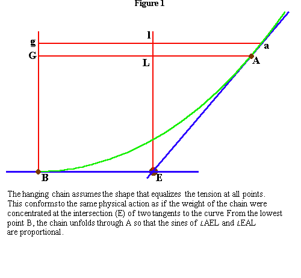
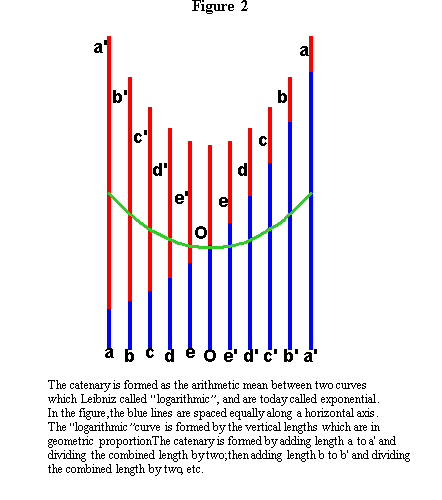
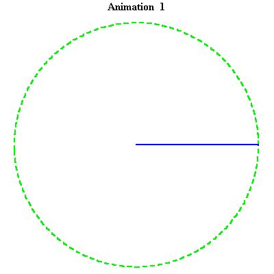
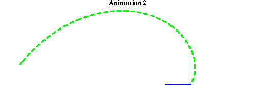
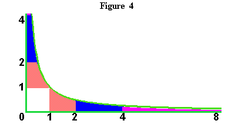
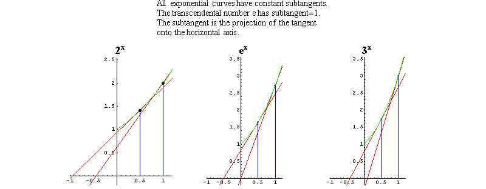
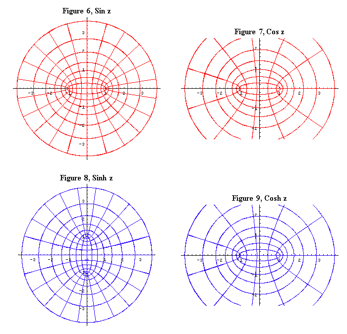
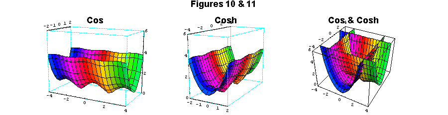
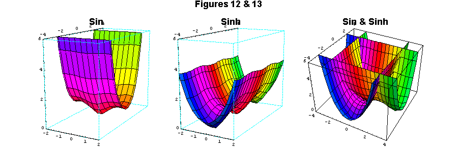

TRANSCENDENTAL HARMONIES
Discoveries indicating the existence of what Gauss would later call the complex domain began with Pythagoras and his followers in the 6th Century B.C, These discoveries, which include the ratios of musical intervals, the doubling of the line, square and cube, the five regular solids, and many others, demonstrated that universal principles expressed themselves in the shadow world of the senses by harmonic proportions. Yet, in all cases, this harmony was never complete. There was always some small discrepancy, some paradoxical dissonance, that indicated a still undiscovered principle. This is why Pythagoras called geometry "science or inquiry", and, according to Proclus, he thought that each discovery, "sets up a platform to ascend by, and lifts the soul on high instead of allowing it to go down among sensible objects and so become subservient to the common needs of this mortal life."
The most persistent of the dissonances recognized by the Pythagoreans were not resolved until nearly 2500 years later, when, Bernhard Riemann, in his 1851 doctoral dissertation, noted that in Gauss' domain of complex magnitudes, "a harmony and regularity emerge that otherwise remains hidden."
To discover these otherwise hidden harmonies, we must first take a closer look at some paradigmatic discoveries in which the dissonances arise:
Pythagoras discovered that the concordant musical intervals corresponded to the proportions, 2:1, 3:2, 4:3, if produced by a straight vibrating string. These ratios produced the intervals known as the octave, fifth and fourth, respectively. More importantly, the Pythagoreans also discovered that if these proportions are simply extended, a discrepancy emerged called the Pythagorean comma.(See Fred Haight Pedagogy.) However, ideas are conveyed by the human voice singing poetry, not vibrating strings. The comma, therefore, is not a mere deficiency. It is an indication that a higher principle exists, a principle that actually governs musical harmonies, but which cannot be derived from the manifold of vibrating strings. It can only be derived from the manifold that has come to be known as the well-tempered system of bel canto polyphony, to which many analogies can be drawn to the complex domain. (fn. 1.)
Similar harmonic proportions are expressed by the principles governing the extension of a line, square and cube. Extension of a line produces relationships that the Pythagoreans called "arithmetic", which correspond to the musical interval of a fifth. Extension of a square produces relationships called by the Pythagoreans, "geometric", which correspond to the Lydian musical interval. While the arithmetic and geometric are harmonic within their own individual domain, together they form a dissonance, expressed as the incommensurability between arithmetic and geometric magnitudes. That dissonance indicates, as Plato noted, that the line and square were produced by principles of different "powers".
The extension of the cube produces a third, higher, power, that cannot be generated by the line or square. Nevertheless, this power is expressed in the lower domain of squares by two geometric means between two extremes. But, as the discoveries of, most notably, Archytus and Menaechmus, showed, the construction of the magnitudes of this third power, cannot be generated by the squares among whose shadows it dwells. This cubic power is only generated by a higher form of curvature, such as that associated with conic sections and the torus.
Plato understood that the extension of line, square and cube denoted a succession of distinct higher powers. Leibniz would later discover an even higher principle that transcended all such powers. He called this transcendental principle, "exponential" or, inversely, "logarithmic", the significance of which will be made more clear below.
Another class of harmonic proportions investigated by Pythagoras and his followers was associated with the five regular solids and the constructability of the regular polygons. The regular solids and constructable polygons were artifacts produced by the harmonic divisions of the sphere and circle. However, these harmonic divisions are bounded. There are only five regular divisions of the sphere, and, at least as far as the Pythagoreans were concerned, the constructable polygons were limited to the triangle, square, pentagon and certain combinations of the same. (fn.2.) The boundaries confronted by the divisions of the sphere and circle express a dissonance with respect to the harmonies governing those divisions.
This general class of principles, that is those associated with the divisions of the sphere and circle also comprise a class of transcendentals called "trigonometric".
The unity between these two classes of transcendentals exemplifies the otherwise hidden harmony to which Riemann refers in his dissertation.
The first step toward the elaboration of this unity was taken by Nicholas of Cusa, who, citing Pythagoras, recognized that all universal principles expressed themselves harmonically in the domain of the senses. But, Cusa emphasized that these harmonies could only be expressed by the transcendental magnitudes typified by the dissonances identified in the above examples. Cusa, thus presented, the paradoxical proposition that the art of science is to seek out the dissonances and discover the transcendental principle that harmonizes them.
Johannes Kepler, applying Cusa's insight, provided the first crucial experimental demonstration that physical principles could only be known through this transcendental harmony. This begins with his discovery of the harmonic correspondence between the five regular solids and the approximate orbits of the six visible planets, the discovery of which, Kepler states, depended on Cusa's emphasis of the dissonance between the curved (spherical) and the straight (planar). Kepler's further discovery of the eccentricity of the planetary orbits expressed another harmony through dissonance. Unlike a circular orbit, the regular divisions of an eccentric are dependent not on the angle, but on the sine of the angle, which is transcendental to the angle. Additionally, Kepler showed that the harmonic relationships among the orbital eccentricities of all the planets are dependent, not on the simple harmonies of the vibrating string, but on the dissonances indicated by the Pythagorean comma. (See "How Gauss Determined the Orbit of Ceres", Summer 1998 Fidelio, and earlier installments of "Riemann for Anti-Dummies".)
Fermat's proof that the principle of least-time, not shortest distance, governed the propagation of light, is another experimental demonstration of physical action that is dependent not on the equality of angles, but on the proportionality of the sine.
In sum, the discoveries of Kepler and Fermat demonstrate that harmonic relationships in the physical universe are, as Cusa indicated, not expressible by precisely calculable numbers, but only by transcendental quantities a polyphony of dissonances.
The Leibniz-Bernoulli collaborative investigations into the principle governing the hanging chain, provide the crucial step to Riemann's assertion.
As detailed in other locations, Bernoulli applying the principles of Leibniz' calculus, demonstrated that the physical principle that determined the shape of the hanging chain was expressed by a proportionality of the sines of the angles formed by the chain and the physical singularity located at the chain's lowest point. (See figure 1.)
 |
On the other hand, Leibniz demonstrated that this same physical principle was also expressed as an exponential function. (See figure 2.)
 |
Thus, the catenary expresses a unifying physical principle between what had appeared to be two different classes of transcendentals: the trigonometric and exponential. That unity, as Riemann indicates, only fully emerges when seen from the standpoint of Gauss' complex domain.
The means to discover that harmonic unity, as in a musical composition, is by inversion.
Remember that the exponential and trigonometric functions first emerged as dissonances embedded in the harmonic relationships among objects in the visible domain. Now, think of those objects as artifacts of the dissonances, instead of the dissonances as artifacts of the objects.
For example, think of the circle as an artifact of the trigonometric transcendentals, and the line, square and cube, as artifacts of the transcendental exponential function. (See animation 1 and animation 2.)
 |
 |
This poses the difficulty of forcing the mind, as Cusa insists, away from the simple harmonic proportions among objects of visible space, to the transcendental harmonic proportions among the principles that generate them.
If we use the principle of the catenary as a pivot, we can present, at least in an intuitive form, the harmony of which Riemann speaks. A more complete demonstration will be left to future pedagogicals and to the oral discussions that this installment will undoubtedly provoke.
As previously noted, the catenary expresses both the trigonometric and the exponential functions. Thus, the catenary as the principle of physical least-action, subsumes both the principle of constant length (circle) and constant area (hyperbolic). (See figure 4.)
 |
To this Leibniz added a new crucial conception: the exponential is the curve that embodies the principle of self-similar change. (See figure 5.) This led Leibniz to discover a new transcendental number that he denoted by the letter "b". (Euler later derived the same quantity from formal algebra and denoted it by the letter "e" which is used today. It is typical of today's academic frauds that this discovery is attributed to Euler's formalism, instead of Leibniz' Socratic idea.)
Figure 5  |
We have already seen how the hyperbola is generated by the exponential functions derived from the catenary. But, the exponential also generates the circle when the circle is thought of, as it should be, as a special case of an exponential spiral. Keep in mind Kepler's projective relationship among the conic sections. (See Riemann for Anti-Dummies Part 33.) For Kepler the circle and the hyperbola were at opposite extremes of one manifold, and as such embody a common principle of generation. But, in that projective relationship, there was a discontinuous gap, a dissonance, between the hyperbola and the circle, giving the appearance that the hyperbola was on the "other side of the infinite" from the circle. Only in the complex domain of Gauss and Riemann does that gap disappear and that common generating principle harmonically expressed.
Since both the circle and the hyperbola are generated by the common principle expressed by the exponential, the trigonometric and hyperbolic functions can be represented as complex functions. Riemann created a concept of complex functions as transformations that produce manifolds of action, which in turn produce least-action pathways within that manifold. The study of complex functions formed the basis of Riemann's work on algebraic, hypergeometric and abelian functions, which will be elaborated in future installments. As a precondition to that deeper study, we provide the reader with an intuitive view of the "otherwise hidden harmony and regularity" that emerges there.
Figures 6, 7, 8, 9, illustrate the complex mappings of the sine cosine, hyperbolic sine and hyperbolic cosine. As can be seen, all four functions express as artifacts, not one hyperbola or circle, but a system of orthogonal hyperbolas and circles.
 |
Figures 10 and 11, and figures 12 and 13 illustrate surfaces constructed by the complex sine, cosine, hyperbolic sine and hyperbolic cosine. In the visible domain the circle is closed and periodic, while the hyperbola is infinite. Yet, when viewed from the standpoint of the complex domain, both are periodic. The shape of the curves rising from the surface, in both cases, are catenaries!
 |
 |
And, this is only the beginning.
NOTES
1. The analogy between well-tempered polyphony and the complex domain is most directly seen in the late quartets of Beethoven. There the characteristic half-step boundaries between neighboring keys and modes are transformed. Just as a solid is bounded by surfaces and a surface is bounded by lines, Beethoven transforms the keys and modes from the bounded to the boundaries of a "musical solid".
2. It was one of Gauss' earliest discoveries of the complex domain that the constructable polygons included the 17-gon and all polygons with the prime number of sides of the form 22^n + 1.
3. For generations students have been brainwashed by the Euler's mystical algebraic derivation of the unity between the exponential and the trigonometric. The algebraic form of the circle as the curve of constant length is x2 + y2 = 1, where x and y are the legs of a right triangle. The algebraic expression of the hyperbola is x2 - y2 = 1. When factored algebraically the circle yields, (x + y√-1)(x - y√-1), while the hyperbola yields (x + y)(x - y).
{kind=link}
{kind=link}
{kind=link}
{kind=link}
{kind=link}
{kind=link}
{kind=link}
{kind=link}
{kind=link}